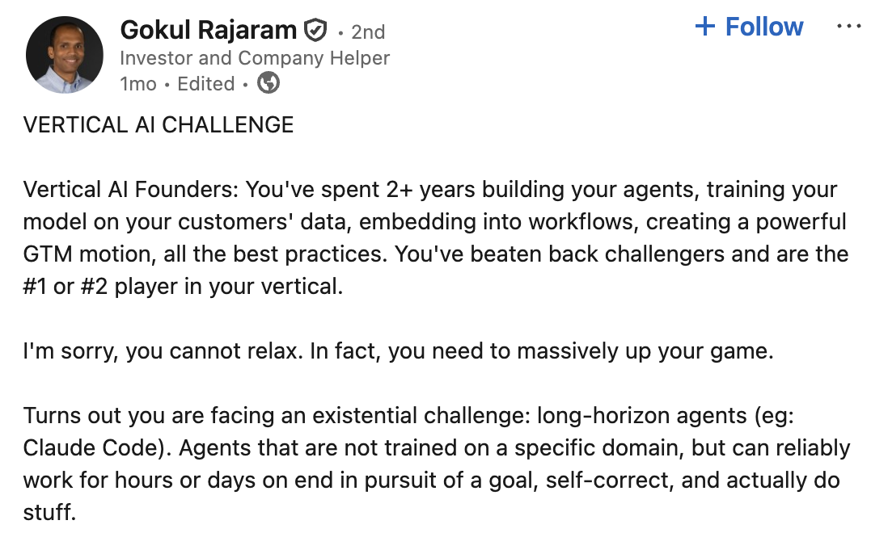
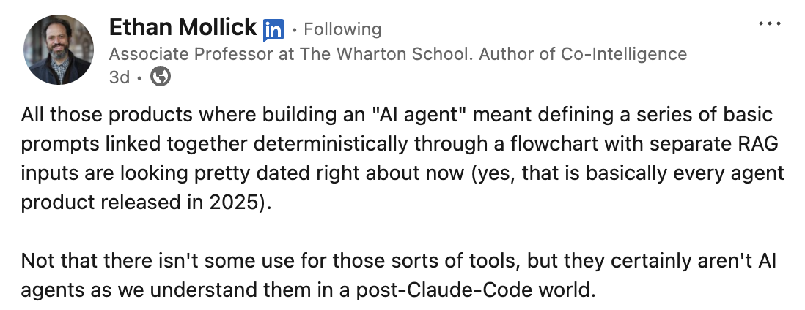

Mrinal Wadhwa · February 2026
Agent Sandboxes
how to create millions of them
In Autonomy, our customers can spin up
swarms of thousands of
long-horizon agents in milliseconds. These swarms
collaborate across machines and work autonomously for hours.
Mid-last year, it was clear to me that agents need their own workspace: a filesystem and a shell.
With one, they can work autonomously over a much longer horizon. Recent models are capable enough to
reason and self-correct. A workspace gives them somewhere to do it. The longer an agent can work,
the more it can achieve.
Claude Code was an early glimpse. It wrote progress files and structured notes that bridged its
thinking across context windows.
It ran shell commands like grep and awk to find what it needed rather than relying on vector search.
It created and ran ad hoc scripts to get work done without needing a predefined, exhaustive set of
tools.
My own experiments confirmed this. A single agent with a workspace could take thousands of
autonomous steps toward complex goals. In
Autonomy, it can delegate to swarms of sub-agents that each
have their own workspace. Together, they can autonomously tackle far more difficult problems. The
conclusion was obvious: Autonomy should be able to give every agent its own workspace.
In the last couple of months, the larger community has caught up.


But giving an agent a shell is dangerous. Agents are gullible. They deal in untrusted input and
can’t reliably tell the difference between a legitimate request and a malicious one. If an agent can
run shell commands, an attacker can talk it into running a fork bomb.
That risk is amplified in Autonomy. We’re a multi-tenant platform, and our customers are building
multi-tenant products on top of us. Agents from different end users all run side by side. One
compromised agent can’t be allowed to harm another.
Every workspace must be locked down. Without filesystem isolation, one agent can read another’s
secrets or corrupt its work.
Without process isolation, it can spy on a neighbor’s memory or kill its processes. Without network
controls, it can exfiltrate sensitive data or open a reverse shell. Without resource limits, a
single runaway agent can consume all the memory and starve every other agent on that machine.
Swarms of long-horizon agents are incredibly powerful. But to enable them, we needed millions of
locked-down workspaces, created in milliseconds, with minimal overhead, and without compromising
security.
Seatbelt: the macOS Sandbox
I develop on macOS. So the first sandbox technique I explored was Seatbelt: the kernel-enforced
mechanism that Chrome, Safari, and every App Store app use to restrict what a process can do.
The interface to it is the command: sandbox-exec. We write a profile in SBPL (Sandbox
Profile Language), a Scheme-like syntax that compiles to kernel-enforced rules.
/System/Library/Sandbox/Profiles/ has dozens of built-in profiles worth studying.
I deny everything by default, then allow only what’s needed: reads from system paths and the
workspace, writes to only the workspace.
Run the following script with ./sandbox.sh /bin/bash and we get a shell where reads
outside /usr, /bin, and /tmp/workspace fail, writes outside
/tmp/workspace fail, and network access is limited to approved endpoints. The kernel
enforces the rules.
#!/bin/bash
# sandbox.sh - Run a command in a sandboxed environment
mkdir -p /tmp/workspace
# Create the sandbox profile
cat > /tmp/sandbox-profile.sb <<'EOF'
(version 1)
(deny default) ; deny everything by default
(allow file-read* (subpath "/usr")) ; allow reading system binaries and libraries
(allow file-read* (subpath "/bin"))
(allow file-read* (subpath "/tmp/workspace")) ; allow reading the workspace
(allow file-write* (subpath "/tmp/workspace")) ; allow writing to the workspace
(allow file-write* (literal "/dev/null"))
(allow network-outbound (remote tcp "api.example.com:443")) ; allow connecting to a specific api endpoint
(allow process-exec) ; allow executing programs
(allow process-fork)
(allow sysctl-read)
EOF
# Run the command inside the sandbox
sandbox-exec -f /tmp/sandbox-profile.sb "$@"
Seatbelt has no process isolation; a sandboxed process can still see, signal, and kill other
processes on the machine, and trace them to read their memory. There are no resource limits either;
a single runaway process can consume all available memory.
Even with these gaps, Seatbelt is far better than a loose coding agent that can read every secret on
your disk. For local development, it’s a meaningful layer of protection. But for production, I
needed to run on Linux with full process isolation and resource limits.
Landlock
The classic approach to filesystem isolation on Linux is chroot. It changes the root
directory for a process so it can only see files under the new root. But chroot was
never designed as a security boundary. A root process can escape it trivially, and it does nothing
to restrict network, processes, or resources. Landlock is the modern replacement.
It’s a Linux Security Module, available since kernel 5.13, that lets an unprivileged process
restrict its own filesystem access. No root required. No containers. Once applied, the restrictions
are permanent for that process and all its children. There’s no undo. Landlock uses three syscalls.
There’s no shell command for it. Here’s the minimal C code:
// sandbox.c - minimal Landlock example
#include <linux/landlock.h>
#include <sys/prctl.h>
#include <sys/syscall.h>
#include <fcntl.h>
#include <unistd.h>
// Step 1: Create a ruleset that handles filesystem access
struct landlock_ruleset_attr ruleset_attr = {
.handled_access_fs = LANDLOCK_ACCESS_FS_READ_FILE | LANDLOCK_ACCESS_FS_READ_DIR |
LANDLOCK_ACCESS_FS_WRITE_FILE | LANDLOCK_ACCESS_FS_EXECUTE,
};
int ruleset_fd = syscall(SYS_landlock_create_ruleset, &ruleset_attr, sizeof(ruleset_attr), 0);
// Step 2: Add rules - allow read access to /usr
struct landlock_path_beneath_attr path_attr = {
.allowed_access = LANDLOCK_ACCESS_FS_READ_FILE | LANDLOCK_ACCESS_FS_READ_DIR | LANDLOCK_ACCESS_FS_EXECUTE,
.parent_fd = open("/usr", O_PATH),
};
syscall(SYS_landlock_add_rule, ruleset_fd, LANDLOCK_RULE_PATH_BENEATH, &path_attr, 0);
close(path_attr.parent_fd);
// Add write access to workspace
path_attr.allowed_access = LANDLOCK_ACCESS_FS_READ_FILE | LANDLOCK_ACCESS_FS_WRITE_FILE;
path_attr.parent_fd = open("/tmp/workspace", O_PATH);
syscall(SYS_landlock_add_rule, ruleset_fd, LANDLOCK_RULE_PATH_BENEATH, &path_attr, 0);
close(path_attr.parent_fd);
// Step 3: Enforce - no going back after this
prctl(PR_SET_NO_NEW_PRIVS, 1, 0, 0, 0);
syscall(SYS_landlock_restrict_self, ruleset_fd, 0);
close(ruleset_fd);
// Now sandboxed. Exec the target command.
execvp(argv[1], &argv[1]);
Landlock restricts the filesystem. But that’s all it does. A Landlock-sandboxed process can
still open TCP connections, exfiltrate data, or establish reverse shells.
It can see and signal every other process on the machine. It has no resource limits.
Compile and run the C code as shown below.
$ gcc -o sandbox sandbox.c
$ mkdir -p /tmp/workspace
$ ./sandbox /bin/bash
# Inside the sandboxed shell:
$ echo "test" > /tmp/workspace/allowed.txt # works
$ echo "test" > /tmp/not-allowed.txt # Permission denied
$ cat /etc/passwd # Permission denied (not in rules)
seccomp
For network restrictions, we need a different tool. seccomp is a kernel mechanism that filters
syscalls. We write a BPF program that runs on every syscall and decides whether to allow or reject
it. Docker, Chrome, and systemd all use it.
seccomp closes the network gap that Landlock leaves open. But it can only inspect syscall numbers
and their immediate argument values, not pointers to user memory.
It can’t filter by destination address. Unlike Seatbelt’s per-endpoint rules, seccomp
is all or nothing: block network syscalls entirely, or allow them.
Even with Landlock and seccomp, a process can still signal other processes, consume unlimited
memory, and fork without limit.
The filter below blocks syscalls: socket, connect, and bind.
// block_network.c - minimal seccomp example
#include <linux/seccomp.h>
#include <linux/filter.h>
#include <linux/audit.h>
#include <sys/prctl.h>
#include <sys/syscall.h>
// BPF program: if syscall is socket/connect/bind, return EPERM
struct sock_filter filter[] = {
// Load syscall number
BPF_STMT(BPF_LD | BPF_W | BPF_ABS, offsetof(struct seccomp_data, nr)),
// If socket(), return EPERM
BPF_JUMP(BPF_JMP | BPF_JEQ | BPF_K, SYS_socket, 0, 1),
BPF_STMT(BPF_RET | BPF_K, SECCOMP_RET_ERRNO | EPERM),
// If connect(), return EPERM
BPF_JUMP(BPF_JMP | BPF_JEQ | BPF_K, SYS_connect, 0, 1),
BPF_STMT(BPF_RET | BPF_K, SECCOMP_RET_ERRNO | EPERM),
// If bind(), return EPERM
BPF_JUMP(BPF_JMP | BPF_JEQ | BPF_K, SYS_bind, 0, 1),
BPF_STMT(BPF_RET | BPF_K, SECCOMP_RET_ERRNO | EPERM),
// Allow everything else
BPF_STMT(BPF_RET | BPF_K, SECCOMP_RET_ALLOW),
};
struct sock_fprog prog = {
.len = sizeof(filter) / sizeof(filter[0]),
.filter = filter,
};
// Apply the filter
prctl(PR_SET_NO_NEW_PRIVS, 1, 0, 0, 0);
prctl(PR_SET_SECCOMP, SECCOMP_MODE_FILTER, &prog);
cgroups
Landlock and seccomp together cover filesystem and network. But neither limits resources. A process
can still spin up thousands of threads, balloon its memory, or saturate disk I/O.
Control groups (cgroups) solve this. They’re a kernel mechanism for limiting CPU, memory, and I/O
per process group. The interface to create cgroups is the filesystem: create a directory under
/sys/fs/cgroup/, write limits into it, and move processes in.
If the process exceeds 256MB, the kernel kills it. If it tries to fork more than 50 processes, the
fork fails. If it tries to use more than one core, the scheduler throttles it. The limits are
enforced by the kernel and inherited by all child processes.
Resources are now capped. But without namespace isolation, the process still shares the
host’s process table and mount tree.
#!/bin/bash
# cgroup.sh - Apply resource limits
mkdir -p /sys/fs/cgroup/sandbox
echo "256M" > /sys/fs/cgroup/sandbox/memory.max # max 256MB memory
echo "100000 100000" > /sys/fs/cgroup/sandbox/cpu.max # max 1 CPU core
echo "50" > /sys/fs/cgroup/sandbox/pids.max # max 50 processes (stops fork bombs)
echo $$ > /sys/fs/cgroup/sandbox/cgroup.procs # move this process in
# Run the command
exec "$@"
Namespaces and Bubblewrap
Together, Landlock restricts the filesystem, seccomp restricts syscalls and network, and cgroups
restrict resources. Add namespace isolation to these three primitives and we have a Linux container.
That’s what Docker does under the hood with runc.
But containers carry a large overhead: a daemon, image layers, storage drivers, per-container
networking. Container startup takes several seconds. We need millions of sandboxes in milliseconds.
Containers can’t get us there. We need namespace isolation without the rest.
Namespaces work differently from everything we’ve seen so far. Landlock, seccomp, and cgroups
deny access to things that exist. Namespaces make the things not exist at all.
A mount namespace hides the host filesystem. A PID namespace hides other processes. A network
namespace hides the host network. What isn’t in the namespace doesn’t exist.
Bubblewrap is a single binary that does exactly this. It wraps a process in its own set of Linux
namespaces: mount, PID, network, IPC. No daemon, no container image, no storage driver.
The entire setup takes milliseconds. It starts with an empty mount namespace, then selectively
bind-mounts only the paths we explicitly allow. The process can’t see paths that
weren’t mounted. It’s an allowlist, not a denylist.
#!/bin/bash
# bubblewrap.sh - Run a command in isolated namespaces
mkdir -p /workspace/sandbox_a
bwrap \
--ro-bind /usr /usr \
--ro-bind /lib /lib \
--ro-bind /lib64 /lib64 \
--ro-bind /bin /bin \
--bind /workspace/sandbox_a /workspace \
--tmpfs /tmp \
--proc /proc \
--dev /dev \
--unshare-pid \
--unshare-net \
--unshare-ipc \
--new-session \
--die-with-parent \
"$@"
Run it with ./bubblewrap.sh /bin/bash. Inside, the process sees only /usr,
/lib, /bin, and its /workspace. Another workspace at
/workspace/sandbox_b? Doesn’t exist. The host’s /etc/passwd? Doesn’t
exist. --unshare-pid gives it its own PID namespace, so it can’t see or signal other
processes. --unshare-net gives it its own network namespace with only a loopback
interface. No network access unless we proxy it through a Unix socket.
This is the key difference from Landlock. With Landlock, a path like
/etc/shadow exists but access is denied. With Bubblewrap, we never mount that path.
There’s nothing to block because there’s nothing there.
Bubblewrap gives us strong agent-to-agent isolation. But isolating agents from each other
isn’t enough. We also need to isolate customers from each other and from our infrastructure.
Autonomy runs on Amazon EKS. Customers define zones with pods and containers. A container runs many
agents, and each agent’s workspace can be wrapped in Bubblewrap. But Bubblewrap needs
CLONE_NEWUSER to create user namespaces without root. Inside a container, this requires
CAP_SYS_ADMIN, the capability behind most container escape exploits. Granting it would
strengthen the agent boundary but weaken the container boundary.
Customers bring their own code to run in these containers. The container boundary is what stands
between that code and our infrastructure. It shares the host kernel with every other container on
that Kubernetes node. We need to strengthen it, not weaken it.
Virtual Hardware: Firecracker
Next, I considered running each customer’s pod inside a virtual machine. A dedicated EC2
instance per customer would start too slowly and add too much overhead. Firecracker is a lightweight
virtual machine built for exactly this. It’s what AWS Lambda and Fargate use.
Instead of sharing the host kernel, each Firecracker VM gets its own Linux kernel. The isolation is
hardware-enforced via Intel VT-x/AMD-V. To escape, an attacker must exploit the guest kernel, then
the Firecracker process or KVM, then gain access to the host. Three independent bugs, in different
codebases.
Firecracker requires Linux with KVM. The script below downloads it and boots a minimal VM:
#!/bin/bash
set -e
# Check KVM
if [ ! -e /dev/kvm ]; then
echo "KVM not available. Firecracker requires hardware virtualization."
exit 1
fi
# Download Firecracker
ARCH=$(uname -m)
VERSION="v1.6.0"
curl -fsSL -o firecracker \
"https://github.com/firecracker-microvm/firecracker/releases/download/${VERSION}/firecracker-${VERSION}-${ARCH}"
chmod +x firecracker
# Download a minimal kernel and rootfs
curl -fsSL -o vmlinux.bin "https://s3.amazonaws.com/spec.ccfc.min/img/quickstart_guide/${ARCH}/kernels/vmlinux.bin"
curl -fsSL -o rootfs.ext4 "https://s3.amazonaws.com/spec.ccfc.min/img/quickstart_guide/${ARCH}/rootfs/bionic.rootfs.ext4"
# Create a config file
cat > vmconfig.json <<EOF
{
"boot-source": {
"kernel_image_path": "vmlinux.bin",
"boot_args": "console=ttyS0 reboot=k panic=1 pci=off"
},
"drives": [
{
"drive_id": "rootfs",
"path_on_host": "rootfs.ext4",
"is_root_device": true,
"is_read_only": false
}
],
"machine-config": {
"vcpu_count": 1,
"mem_size_mib": 128
}
}
EOF
echo "Starting Firecracker VM..."
echo "You'll get a login prompt. Default: root (no password)"
echo "Type 'poweroff' to exit."
echo ""
# Run Firecracker
./firecracker --no-api --config-file vmconfig.json
Save as run-firecracker.sh and run with
chmod +x run-firecracker.sh && sudo ./run-firecracker.sh. We see a Linux boot sequence
and get a login prompt. This is a complete, isolated Linux system. It has its own kernel, its own
init, its own view of the world.
Fargate would be a natural choice. It runs on Firecracker under the hood: ~125ms boot time, ~5 MiB
memory overhead, an attack surface much smaller than a shared kernel.
The ideal combination would be Fargate for hardware isolation between customers, Bubblewrap for
namespace isolation between agents. But Fargate’s seccomp profile blocks
CLONE_NEWUSER, and Fargate doesn’t allow CAP_SYS_ADMIN.
Firecracker and Bubblewrap can’t work together on Fargate.
We could run Firecracker ourselves. Kata Containers integrates it with Kubernetes as a container
runtime. But Kata needs KVM. On AWS, that means bare metal instances or nested virtualization, and
neither works with EKS auto mode.
We use EKS auto mode. AWS manages node infrastructure: scaling, health checks, draining, AMI
updates. Choosing Kata would mean giving all of that up. We would have to provision instances with
KVM access, self-manage node lifecycle, install and update Kata on every node, and maintain guest
kernel images. We’d end up rebuilding Fargate ourselves, just without the restrictions.
Virtual Kernel: gVisor
Firecracker virtualizes the hardware. gVisor virtualizes the kernel.
gVisor intercepts every syscall and reimplements Linux kernel behavior in user space. The sandboxed
process talks to gVisor’s Sentry, not the real kernel. Even if the process exploits a kernel
vulnerability, it’s exploiting gVisor’s Go implementation, not the host. The attack
surface shifts from ~260 Linux syscalls in C to ~40 host syscalls in memory-safe Go.
gVisor is an OCI-compatible container runtime, a drop-in replacement for runc. In Autonomy, we run
it on EKS auto mode nodes. No Fargate restrictions. No blocked capabilities.
# Install gVisor
curl -fsSL https://gvisor.dev/archive.key | sudo gpg --dearmor -o /usr/share/keyrings/gvisor.gpg
echo "deb [arch=amd64 signed-by=/usr/share/keyrings/gvisor.gpg] \
https://storage.googleapis.com/gvisor/releases release main" \
| sudo tee /etc/apt/sources.list.d/gvisor.list
sudo apt-get update && sudo apt-get install -y runsc
# Configure Docker to use gVisor
sudo mkdir -p /etc/docker
sudo tee /etc/docker/daemon.json <<EOF
{
"runtimes": {
"runsc": {
"path": "/usr/bin/runsc"
}
}
}
EOF
sudo systemctl restart docker
The only change is --runtime=runsc. The Sentry intercepts every syscall: file reads,
process forks, network calls. The entire syscall surface changes. The host kernel is unreachable.
When Bubblewrap requests CAP_SYS_ADMIN inside gVisor, the Sentry grants it virtually.
The capability never reaches the host.
gVisor isolates customers from each other and from infrastructure. Bubblewrap isolates agents from
each other. This is the combination that works.
Run the same container with and without --runtime=runsc:
# Standard container runtime (runc)
docker run --rm ubuntu uname -r
# 6.1.109-118.189.amzn2023.x86_64
# gVisor container runtime (runsc)
docker run --rm --runtime=runsc ubuntu uname -r
# 4.4.0
Customer Isolation
The techniques above protect two boundaries: an outer boundary between customers and our
infrastructure, and an inner boundary between agents.
A customer’s container shares the host kernel with every other container on that node. We
considered three approaches to strengthening it.
|
Shared Kernel (runc) |
Virtual Hardware (Firecracker) |
Virtual Kernel (gVisor) |
| Kernel |
Shared host kernel |
Own kernel per VM |
Reimplemented in Go |
| Host syscall surface |
~260 |
~25 |
~40 |
| Escape requires |
1 kernel bug |
KVM + Firecracker chain |
Sentry bug (Go, not kernel) |
| After escape |
❌ Host node, all containers exposed |
✅ Sandboxed Firecracker process |
✅ Sandboxed Sentry process |
| Bubblewrap inside |
⚠️ Needs CAP_SYS_ADMIN |
❌ CLONE_NEWUSER blocked |
✅ Virtual CAP_SYS_ADMIN |
The “after escape” row matters most. With a shared kernel, escaping one container puts
the attacker on the host node. Every other container on that node is exposed. The kubelet has
credentials to the Kubernetes API server. The node’s IAM role may grant access to cloud
resources. One kernel exploit can cascade from container to node to cluster to cloud account.
With Firecracker or gVisor, escaping the boundary lands the attacker in a sandboxed process with
minimal privileges. They need a second, independent exploit just to reach the host. The first gets
them nowhere.
gVisor is the strongest option where both layers work together. It provides a virtual kernel
boundary comparable to Fargate’s hardware boundary, without blocking Bubblewrap inside.
If Fargate lifts its restrictions, hardware-enforced isolation becomes available without changing
the agent layer. If we later choose to manage Kata Containers ourselves, we can add Firecracker
underneath. gVisor is the right choice today. The others remain open.
Millions of Sandboxes
The inner boundary is between agents. One container per agent would provide filesystem, process,
network, and resource isolation out of the box. But containers are slow to start, complex to
maintain, and they impose an upper bound. Past a certain scale, creating more is impossible.
Kubernetes supports a maximum of
150,000 pods per cluster, across 5,000 nodes. That ceiling requires the best DevOps teams in the world. Practically, clusters become hard to
maintain in the tens of thousands of pods. Every pod is an object in etcd. Every pod needs an IP
address, a containerd-shim process, kubelet health monitoring. The orchestration overhead per pod
compounds until the cluster hits a wall.
Bubblewrap and cgroups have no such constraint. They are kernel primitives. A single container can
spawn millions of Bubblewrap sandboxes without the Kubernetes control plane knowing they exist. No
etcd entries, no IP addresses, no API server watches.
|
Landlock |
seccomp |
cgroups |
Container |
Bubblewrap + cgroups |
| Filesystem |
✅ Kernel blocks |
— |
— |
✅ Isolated |
✅ Isolated |
| Processes |
— |
— |
— |
✅ Own PID ns |
✅ Own PID ns |
| Network |
— |
✅ Blocks syscalls |
— |
✅ Own net ns |
✅ Own net ns |
| Resources |
— |
— |
✅ CPU, memory, I/O |
✅ cgroups |
✅ cgroups |
| Startup |
Negligible |
Negligible |
Negligible |
❌ ~5 seconds |
✅ ~5 milliseconds |
| Memory per sandbox |
None |
None |
None |
❌ ~10 MiB |
✅ Negligible |
| Max per cluster |
No limit |
No limit |
No limit |
❌ 150,000 |
✅ No limit |
In Autonomy, none of this complexity is visible to a developer. Each agent gets a sandboxed
workspace through a tool definition: Workspace.
Each Workspace() spawns a Bubblewrap sandbox in about five milliseconds. The agent gets
a mount namespace where only its workspace is visible, a PID namespace where it’s PID 1, and
an isolated /tmp. seccomp filters its syscalls. cgroups cap its CPU, memory, and
process count. The customer’s gVisor container intercepts every syscall underneath,
reimplements Linux in Go, and exposes ~40 host syscalls instead of ~260.
By default, each workspace is isolated to a single agent. But agents that need to coordinate can
also share a workspace. The filesystem then becomes a shared surface: one agent writes a plan,
another refines it.
from autonomy import Agent, Model, Node, Zone, Workspace
# Discover runner machines and distribute work
runners = await Zone.nodes(node, filter="runner")
batches = split_list_into_n_parts(pull_requests, len(runners))
for runner, batch in zip(runners, batches):
await runner.start_worker("reviewer", ReviewWorker())
for pr in batch:
await node.send("reviewer", pr, node=runner.name)
...
# Each worker spawns an agent with its own sandboxed workspace
class ReviewWorker:
async def review(self, pr):
await Agent.start(
node=self.node,
instructions="Review ...",
model=Model("claude-opus-4-5"),
tools=[Workspace()],
)
The agent gets a terminal, read_file, write_file,
edit_file, and a few other tools to work with its filesystem. It sees what looks like a
full Linux environment. It runs shell commands, writes scripts, installs packages. But the
boundaries are invisible and absolute.
A prompt injection that tells the agent to read another workspace fails: the path doesn’t
exist in its namespace. A fork bomb hits the cgroup process limit and stops. An attempt to signal or
kill another agent’s process fails: the process doesn’t exist in its namespace.
Sandboxing is one layer of control. I wrote about the other in
Agent Identities. Both create gates, not guardrails:
deterministic controls the agent cannot bypass.
This is how we create millions of sandboxes for
swarms of agents.
Discuss on Hacker News